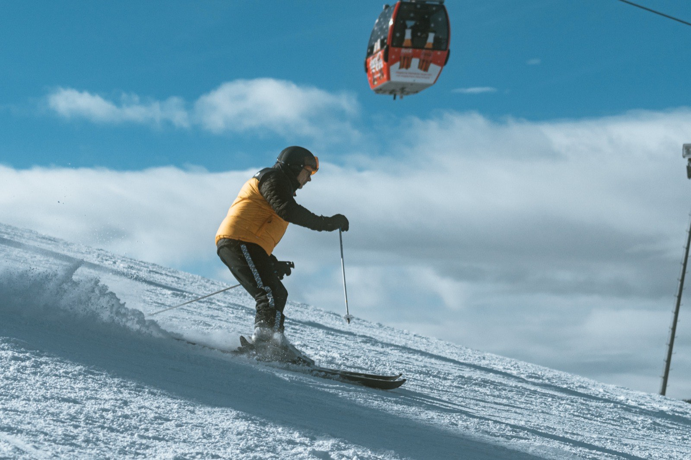
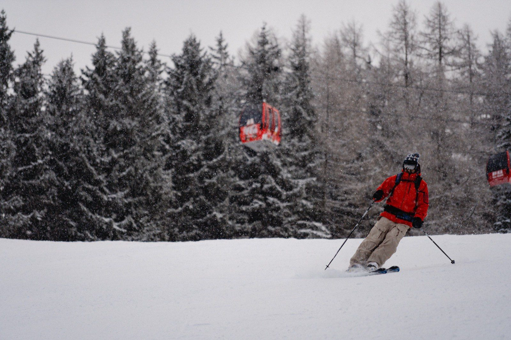
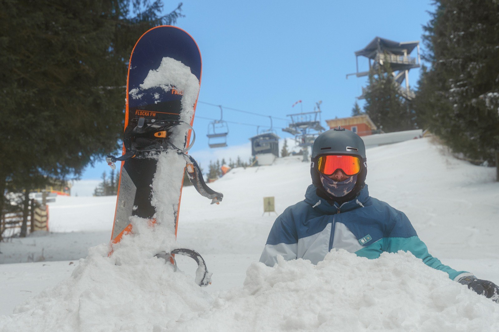
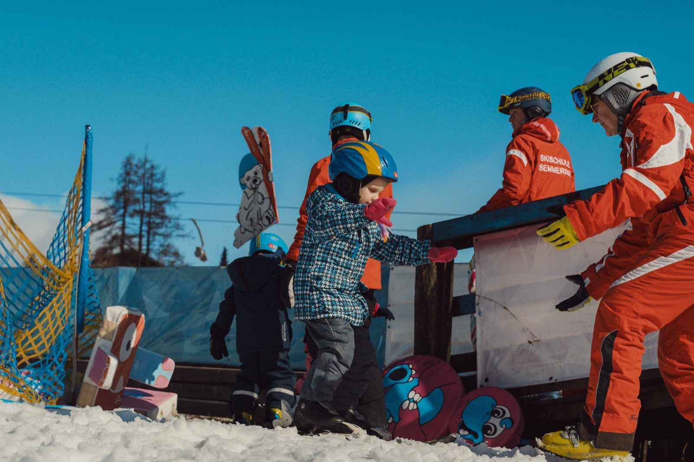
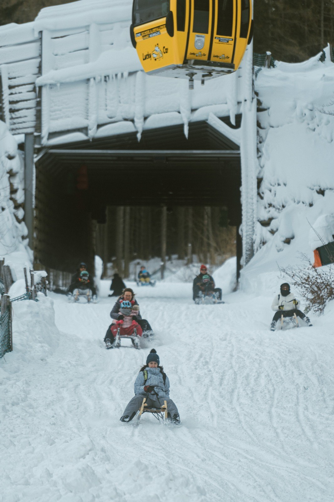
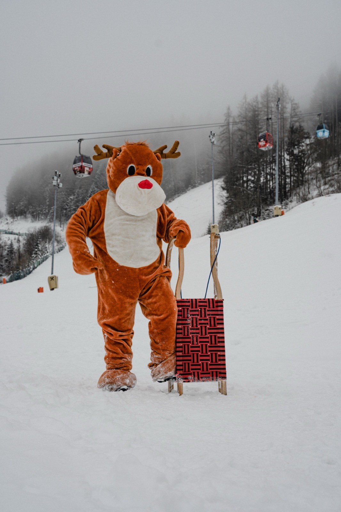

AKTIVITÄT · WINTERACTIVITY · WINTER
Ski & SnowboardSki & snowboard
Winter-AttraktionWinter attraction · Saison ca. Ende November–März. Im Sommer am Berg: Bikepark, Wandern, Mountaincart & Waldseilgarten.· season approx. late November–March. In summer: bike park, hiking, mountain carts & ropes park.
Warum es besonders istWhy it’s special
14 km Pisten für jedes Level, FIS-zertifizierte Panorama-Piste — und Nachtskifahren bei Flutlicht bis 21 Uhr.14 km of slopes for every level, a FIS-certified panorama slope — and night skiing under floodlights until 9 pm.
Ski & Snowboard in BildernSki & snowboard in pictures






← wischen →← swipe →
Gut zu wissenGood to know
TagesbetriebDay operation
Ob Einsteiger, Genussfahrer, Freerider oder Snowboarder — auf blauen, roten und schwarzen Pisten ist für jeden das Richtige dabei: von der familienfreundlichen Abfahrt über die FIS-Panorama-Piste bis zur anspruchsvollen Freeride Area (Osthang). Auf genau dieser Piste gastiert im Dezember 2027 wieder der Audi FIS Ski Weltcup — du fährst also die Rennstrecke selbst. Perfekt präparierte Hänge laden zum Carven ein, mit Blick aufs Semmering-Rax-Schneeberg-Gebiet.Whether beginner, cruiser, freerider or snowboarder — blue, red and black slopes suit everyone: from the family-friendly run and the FIS panorama slope to the demanding freeride area (Osthang). It's on this very slope that the Audi FIS Ski World Cup returns in December 2027 — so you ski the race line yourself. Perfectly groomed pitches invite carving, with views of the Semmering-Rax-Schneeberg region.
Nachtbetrieb — 13 von 14 km im FlutlichtNight operation — 13 of 14 km floodlit
6 Nachtpisten in Weltcup-tauglicher Beleuchtung, täglich in der Betriebspause (16–18 Uhr) frisch präpariert; ab 18 Uhr laufen Kabinenbahn & Sessellift weiter. 13 der 14 Pistenkilometer sind beleuchtet — eines der bekanntesten Nachtskigebiete Ostösterreichs, keine Bergfahrt nötig, die du nicht schon im Tageslicht kennst. Betriebstage & Zeiten variieren saisonal — vor der Anreise auf der Live-Seite prüfen.6 night slopes in World-Cup-grade lighting, freshly groomed daily during the 4–6 pm operating break; from 6 pm the gondola & chairlift keep running. 13 of the 14 km of slopes are floodlit — one of eastern Austria’s best-known night ski areas. Night-operation days & hours vary by season — check the Live page before you set off.
VIP-Kabine — LuxusbergfahrtVIP cabin — luxury ride
Ein Top-Angebot: hochmoderne Kabine mit Sekt & Kanapees während der Bergfahrt, gefolgt von einem köstlichen Menü im Liechtensteinhaus — ein unvergesslicher Abend. Auf Anfrage.A top offer: a high-tech cabin with sparkling wine & canapés during the ride up, followed by a delicious menu at the Liechtensteinhaus — an unforgettable evening. On request.
Verleih & SkischulenRental & ski schools
Verleih: Alpincenter (Skischule Semmering) & Sport 2000 Puschi (auf der Passhöhe / an der Talstation, auch im Nachtbetrieb geöffnet). Schulen: Skischule Semmering & Schneesportschule Zauberberg (Gruppen-, Privat- & Kinderkurse; Voranmeldung empfohlen).Rental: Alpincenter (Skischule Semmering) & Sport 2000 Puschi (on the pass / at the valley station, also open during night operation). Schools: Skischule Semmering & Schneesportschule Zauberberg (group, private & kids' courses; advance booking recommended).
AnfängerBeginners
Am Semmering gibt es eine blaue Piste für Anfänger. Für absolute Einsteiger empfehlen wir den Happylift (Schmoll) gegenüber der Talstation (bei der BILLA-Filiale) — ein eigenständiger Betrieb mit eigenem Ticket.There is a blue slope for beginners. For absolute first-timers we recommend the Happylift (Schmoll) across from the valley station (by the BILLA store) — an independent operation with its own ticket.
Karten & PartnerCards & partners
Tages- und Mehrtageskarten vom Stuhleck gelten auch am Semmering Hirschenkogel (umgekehrt jedoch nicht). Ostalpencard und NÖ Bergerlebnispass gelten am Semmering — für Tages- und Nachtbetrieb.Day and multi-day tickets from Stuhleck are also valid at the Semmering Hirschenkogel (but not vice versa). The Ostalpen card and the NÖ Bergerlebnispass are valid at the Semmering — for day and night operation.
Ideal fürIdeal for:
Passt gut dazuGoes well with

abfrom
28,50 €€28.50
Tageskarte (9–16 Uhr) · Erw. 56,50 €day pass (9 am–4 pm) · adult €56.50
TicketSki-Tageskarte: Lifte + PistenSki day pass: lifts + slopes
GültigkeitValiditysaisonalseasonal
Ticket kaufenBuy ticket
Alle Preise & TicketsAll prices & tickets
Buchung über AxessBooking via Axess
Wetter & Betrieb heuteWeather & operation today →Smart-Choice: Winter-KartenSmart choice: winter passes
Dein Schlüssel zum Winterberg: Tageskarte 56,50 € (Kinder 28,50 €) · Tag & Nacht 101 € statt einzeln 105 € · Kombi mit Leihrodel 66,50 €. Zzgl. 3 € Keycard-Pfand.Your key to the winter mountain: day pass €56.50 (children €28.50) · day & night €101 instead of €105 separately · combo with rental toboggan €66.50. Plus €3 keycard deposit.
Familien-Tipp:Family tip: Hotelgäste: −10% auf Liftkarten (Voucher an der Rezeption).Hotel guests: −10% on lift passes (voucher at reception).

Und im Sommer?And in summer?Bikepark, Waldseilgarten, Millennium Jump & Mountaincart — alles an einem Berg, 1 Stunde von Wien.Bike park, ropes park, Millennium Jump & mountain cart — all on one mountain, one hour from Vienna.
Sommer am SemmeringSummer at the Semmering →